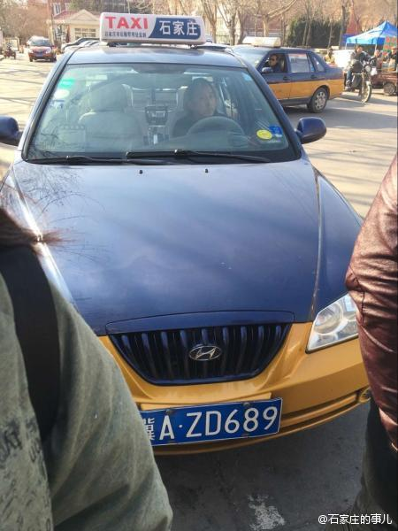

询问#姣姣#对某事的意见，她回答“不知道”。我有些无奈，说你的实际意思是不同意，对嘛？她嘻嘻笑。我有些纳闷，她从小就善用“随便”，“不知道”这些词汇，很少直接否定，比我谨言慎行多了，是天生的吗？ 我说姣姣你就不会说“不”字。她说：“不~~知道，有不啊”。
这个学生很招人厌。1，丢手机是你自己的责任，让捡到的人给送回来，要懂得补偿别人的误工和损失。2，约定好100元的费用，现场交易时只给60，赖账找各种理由 3。女朋友也一样混，为几十块钱还找几个人来威胁 4。为这几十块钱，耽误了好几个人的好几个小时，还上网发帖为自己喊冤，呵呵@石家庄的事儿:【#石家庄身边事#学生来石家庄考试打车遇见糟心事儿！】爆料自@菩提无树丶 ，他来石家庄考试，打车后发现手机落在出租车上，被而且已经被关机。司机向他索要100报酬，他身上只有 60，司机嫌少，还向他索要“误工费” ，司机还说“别的司机捡到了手机会要的更多”！……你怎么看？ 